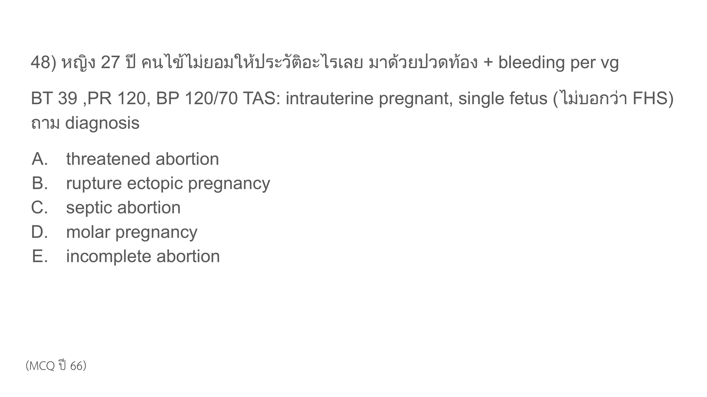
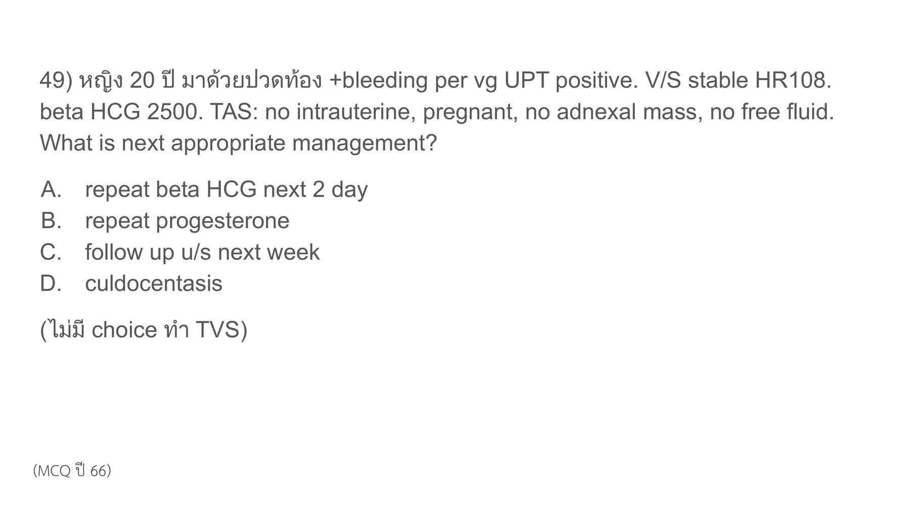
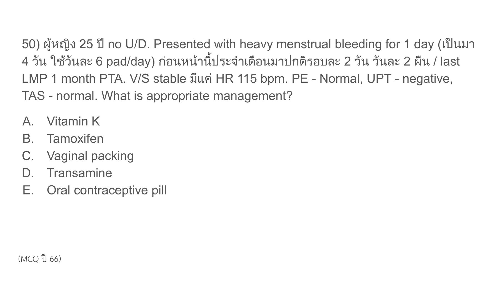
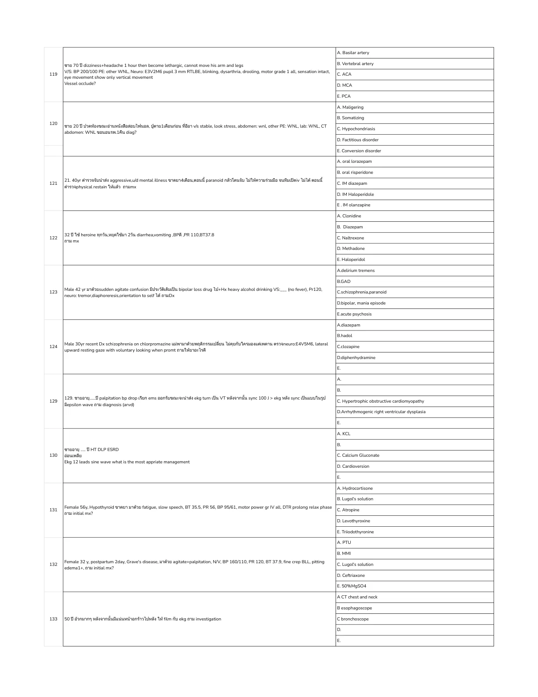
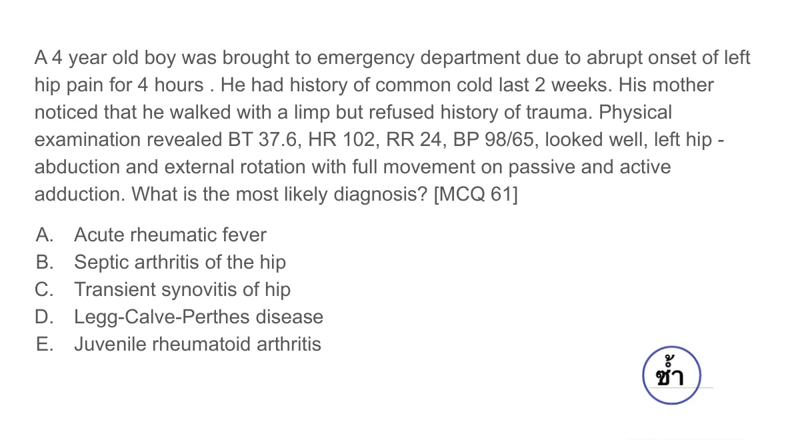
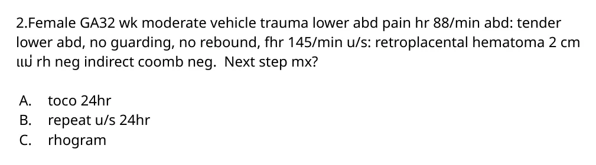
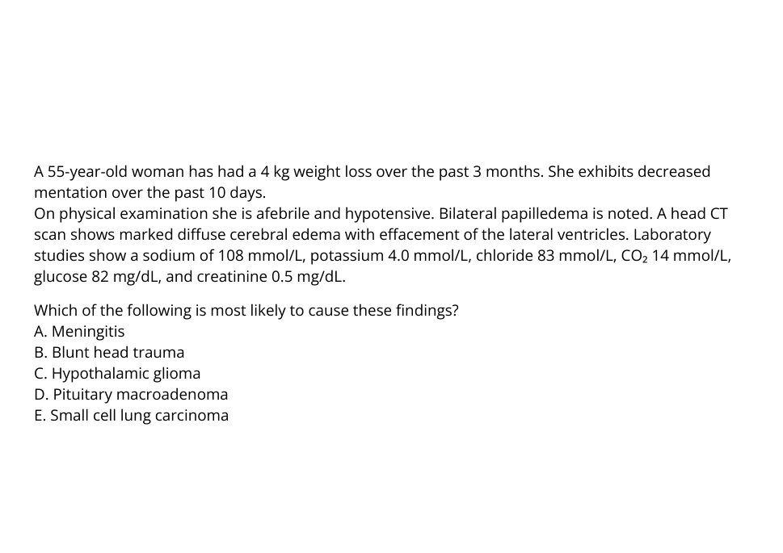
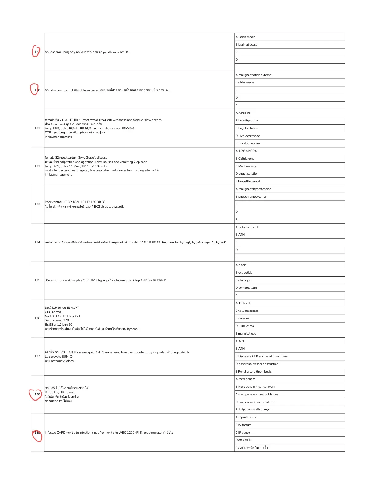
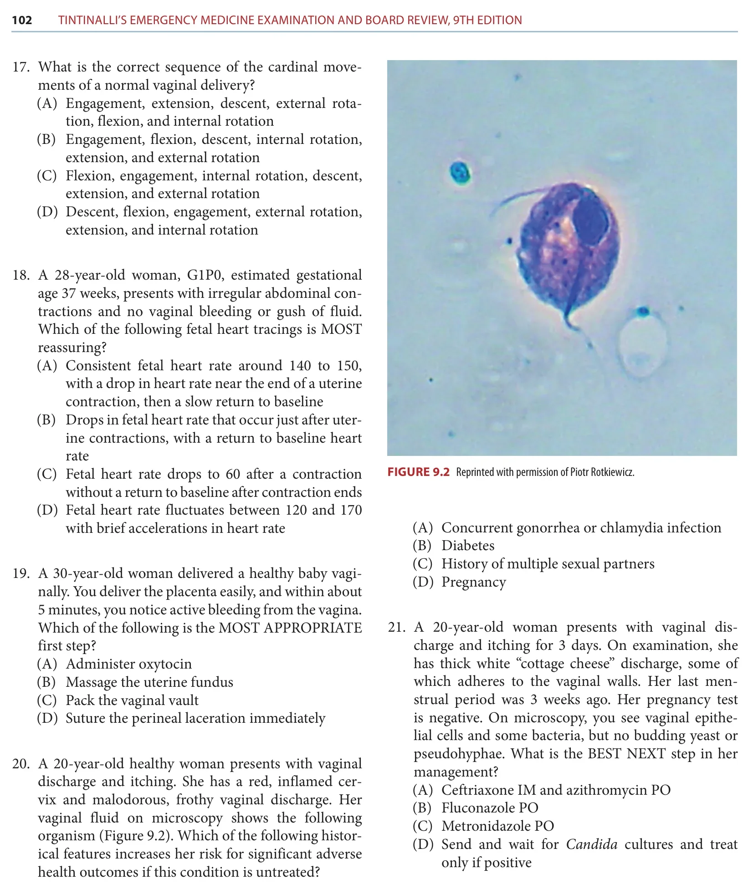
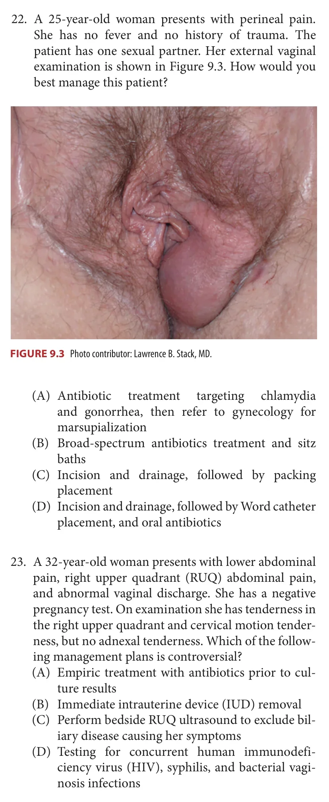

Rows imported from solution_ready_by_special with answer and rationale.
A12-0001A12-Q0001solution_ready
หญิง 27 ปี คนไข้ไม่ยอมให้ประวัติอะไรเลย มาด้วยปวดท้อง + bleeding per vg
BT 39, PR 120, BP 120/70 TAS: intrauterine pregnant, single fetus (ไม่บอกว่า FHS) ถาม diagnosis

crop
ยังไม่ถูก
A. threatened abortion
ยังไม่ถูก
B. rupture ectopic pregnancy
ถูกต้อง
Pregnancy with abdominal pain, vaginal bleeding, fever 39 C, and tachycardia is septic abortion until proven otherwise. Ectopic rupture is unlikely with an intrauterine pregnancy seen on TAS, and threatened/incomplete abortion do not explain the febrile septic picture.
Pregnancy with abdominal pain, vaginal bleeding, fever 39 C, and tachycardia is septic abortion until proven otherwise. Ectopic rupture is unlikely with an intrauterine pregnancy seen on TAS, and threatened/incomplete abortion do not explain the febrile septic picture.
beta HCG 2500. TAS: no intrauterine, pregnant, no adnexal mass, no free fluid. What is next appropriate management?

crop
ถูกต้อง
This is a stable pregnancy of unknown location: positive UPT, no IUP on transabdominal ultrasound, no adnexal mass, and no free fluid. With no TVS choice and no instability, the best next step is serial beta-hCG in 48 hours rather than culdocentesis or waiting a full week.
This is a stable pregnancy of unknown location: positive UPT, no IUP on transabdominal ultrasound, no adnexal mass, and no free fluid. With no TVS choice and no instability, the best next step is serial beta-hCG in 48 hours rather than culdocentesis or waiting a full week.
ผู้หญิง 25 ปี no U/D. Presented with heavy menstrual bleeding for 1 day (เป็นมา 4 วัน ใช้วันละ 6 pad/day) ก่อนหน้านี้ประจำเดือนมาปกติรอบละ 2 วัน วันละ 2 ผืน / last LMP 1 month PTA. V/S stable มีแต่ HR 115 bpm. PE - Normal, UPT - negative, TAS - normal. What is appropriate management?

crop
ยังไม่ถูก
A. Vitamin K
ยังไม่ถูก
B. Tamoxifen
ยังไม่ถูก
C. Vaginal packing
ยังไม่ถูก
D. Transamine
ถูกต้อง
The source page has the answer circled at choice E. Clinically, this is acute heavy menstrual bleeding in a nonpregnant reproductive-age patient with normal exam/TAS and hemodynamic stability, where combined oral contraceptive therapy is an appropriate acute hormonal treatment.
The source page has the answer circled at choice E. Clinically, this is acute heavy menstrual bleeding in a nonpregnant reproductive-age patient with normal exam/TAS and hemodynamic stability, where combined oral contraceptive therapy is an appropriate acute hormonal treatment.
หญิง 22 ปี G1P0 GA 12 weeks มาด้วย seizure, U/D epilepsy Dx ตอนอายุ 14 ปี บนรถ ems ได้ diazepam หยุดชัก จากนั้นไม่ gain concious + มีชักซ้ำ, V/S stable, BP 120/90 mmHg ถาม most appropriated mx
crop
ยังไม่ถูก
A. valproic acid
ยังไม่ถูก
B. MgSO4
ถูกต้อง
At 12 weeks with known epilepsy, normal BP, and recurrent seizure after benzodiazepine, this is not typical eclampsia. Levetiracetam is the best listed antiseizure medication in pregnancy; valproate is avoided when possible because of fetal risk.
At 12 weeks with known epilepsy, normal BP, and recurrent seizure after benzodiazepine, this is not typical eclampsia. Levetiracetam is the best listed antiseizure medication in pregnancy; valproate is avoided when possible because of fetal risk.
Variable decelerations on EFM are classically caused by umbilical cord compression. Early decelerations suggest head compression; late decelerations suggest uteroplacental insufficiency.
Variable decelerations on EFM are classically caused by umbilical cord compression. Early decelerations suggest head compression; late decelerations suggest uteroplacental insufficiency.
female 30 ปี G1P0 GA 38 wk มาด้วย abdominal pain v/s stable ติด EFM เหมือนจะเป็น Late dece ถามว่าเกิดจากสาเหตุอะไร
crop
ถูกต้อง
Late decelerations reflect uteroplacental insufficiency. In this answer set, placental abruption is the most plausible listed cause; oligohydramnios is more tied to variable decelerations from cord compression.
Late decelerations reflect uteroplacental insufficiency. In this answer set, placental abruption is the most plausible listed cause; oligohydramnios is more tied to variable decelerations from cord compression.
Female 32 y, postpartum 2wk, Grave's disease มาด้วย agitate+palpitation and agitation 1 day, nausea and vomiting 2 episode temp 37.9, pulse 110/min, BP 160/110 mmHg mild icteric sclera, heart regular, fine crepitation both lower lung, pitting edema 1+ Initial management

crop
ยังไม่ถูก
A. 10% MgSO4
ยังไม่ถูก
B. Ceftriaxone
ยังไม่ถูก
C. Methimazole
ยังไม่ถูก
D. Lugol solution
ถูกต้อง
Postpartum Graves with agitation, palpitations, vomiting, hypertension, pulmonary congestion, and hepatic involvement is concerning for thyroid storm/severe thyrotoxicosis. Initial antithyroid therapy should be a thionamide; PTU is favored in thyroid storm because it also decreases peripheral T4-to-T3 conversion. Iodine/Lugol is given after thionamide, not first.
Postpartum Graves with agitation, palpitations, vomiting, hypertension, pulmonary congestion, and hepatic involvement is concerning for thyroid storm/severe thyrotoxicosis. Initial antithyroid therapy should be a thionamide; PTU is favored in thyroid storm because it also decreases peripheral T4-to-T3 conversion. Iodine/Lugol is given after thionamide, not first.
GA 37 wk labor pain ให้รูป EFM: early DC, PV 9cm intact membrane + palpable pulse ถาม appropriate Mx
crop
ยังไม่ถูก
A. ดันหัวเด็ก
ยังไม่ถูก
B. ดัน cord
ถูกต้อง
Palpable cord/pulse with abnormal FHR is cord presentation/prolapse physiology. Do not push the cord back or rupture membranes; if vaginal delivery is not immediately achievable, emergency cesarean delivery is the definitive management, with elevation of the presenting part while preparing.
Palpable cord/pulse with abnormal FHR is cord presentation/prolapse physiology. Do not push the cord back or rupture membranes; if vaginal delivery is not immediately achievable, emergency cesarean delivery is the definitive management, with elevation of the presenting part while preparing.
Acute worsening pelvic/RLQ pain with nausea/vomiting, negative pregnancy test, and free fluid in a reproductive-age woman on OCP most strongly fits ruptured corpus luteal cyst. TOA/PID would usually have fever/infectious pelvic findings; torsion is less supported without an ovarian mass/twist description.
Acute worsening pelvic/RLQ pain with nausea/vomiting, negative pregnancy test, and free fluid in a reproductive-age woman on OCP most strongly fits ruptured corpus luteal cyst. TOA/PID would usually have fever/infectious pelvic findings; torsion is less supported without an ovarian mass/twist description.
33 year female, breast feeding, present with acute breast pain 1 h, T 38.5, PE: left breast: redness, swelling, tenderness, US breast as figure What is the most appropriate management?
crop
ยังไม่ถูก
A. Dicloxacillin
ยังไม่ถูก
B. Vancomycin
ยังไม่ถูก
C. Paracetamol
ยังไม่ถูก
D. Manual massage
ถูกต้อง
Breastfeeding patient with fever, erythema/swelling/tenderness, and ultrasound image suggesting a collection is lactational breast abscess rather than simple mastitis. Abscess management is drainage, with antibiotics as adjunct.
Breastfeeding patient with fever, erythema/swelling/tenderness, and ultrasound image suggesting a collection is lactational breast abscess rather than simple mastitis. Abscess management is drainage, with antibiotics as adjunct.
ผู้หญิง 28 ปี ปวดท้อง LLQ อาการดีขึ้นหลังมาถึง ER LMP 2 weeks ago, no active SI Vital sign: stable, no fever Abdomen: tender at LLQ with guarding with rebound tenderness Pelvic exam: normal UPT: negative
What is the most likely etiology of this patient's abdominal pain?
The source slide itself gives the answer as ruptured corpus luteal cyst. The timing around mid-cycle, acute LLQ pain that improved, negative UPT, and normal pelvic exam support a hemorrhagic/ruptured corpus luteum rather than ectopic pregnancy or PID.
pH 5.5, clue cells, positive amine/whiff test, and no motile trichomonads diagnose bacterial vaginosis. The source slide shows recommended BV regimens; a standard first-line regimen is oral metronidazole 500 mg twice daily for 7 days.
The source slide gives the answer as transvaginal sonography. With beta-hCG 1,748 mIU/mL, the value is around/above the TVS discriminatory level shown on the slide, so TVS is the next test to localize the pregnancy and assess ectopic risk.
Discharge after OB consultation with antihypertensive drug
Rationale
The source slide gives this answer. The severe BP was measured outside, but hospital BPs are below severe range and the patient is asymptomatic with normal platelets and only mild transaminitis, so after OB input she can be managed with antihypertensive treatment and close follow-up rather than immediate delivery.
Cardiotocographic and FHR monitoring with OB consultation for tocolytic agent
Rationale
The source slide gives this answer. Pregnant trauma at 33 weeks with contractions but stable hemodynamics and no bleeding/ruptured membranes needs fetal/uterine monitoring and OB involvement; tocolysis may be considered by OB if preterm contractions persist and abruption/other contraindications are excluded.
The source slide gives this answer. Positive UPT with empty uterus and negative TVS is a pregnancy of unknown location; the next step is quantitative serum beta-hCG to interpret ultrasound findings and guide serial follow-up.
97. ผู้ป่วยหญิง G2P1 GA 34 wk มาด้วยปวดท้อง มีเลือดออกทางช่องคลอด ตรวจร่างกาย V/S BP 90/60 HR tachycardia Abd: gravid, hypertonicity contraction, can't palpate fetal part จากนั้น monitor EFM: FHR 90 bpm, late deceleration ถาม immediate mx
crop
ยังไม่ถูก
A. IV fluid
ยังไม่ถูก
B. PRC transfusion
ถูกต้อง
Painful vaginal bleeding, hypertonic uterus, maternal hypotension/tachycardia, and fetal bradycardia/late decelerations indicate severe placental abruption with fetal distress. Immediate resuscitation is needed, but the best listed definitive emergency management is cesarean delivery.
ยังไม่ถูก
D. ..
ถูกต้อง
Painful vaginal bleeding, hypertonic uterus, maternal hypotension/tachycardia, and fetal bradycardia/late decelerations indicate severe placental abruption with fetal distress. Immediate resuscitation is needed, but the best listed definitive emergency management is cesarean delivery.
Painful vaginal bleeding, hypertonic uterus, maternal hypotension/tachycardia, and fetal bradycardia/late decelerations indicate severe placental abruption with fetal distress. Immediate resuscitation is needed, but the best listed definitive emergency management is cesarean delivery.
98. หญิง post egg retrieval 3 วันก่อน มาด้วยปวดท้อง ps 10/10 abd soft, marktender, no guarding U/S left ovarian cyst 8 cm, ไม่ได้เขียนว่า twist, not seen free fluid ถามว่ารักษายังไง
crop
ถูกต้อง
Post-egg retrieval severe pain with an 8 cm ovarian cyst but no free fluid and no torsion described is treated symptomatically first. For 10/10 pain, morphine is the best listed management; methotrexate, estradiol, and medroxyprogesterone do not address the acute presentation.
Post-egg retrieval severe pain with an 8 cm ovarian cyst but no free fluid and no torsion described is treated symptomatically first. For 10/10 pain, morphine is the best listed management; methotrexate, estradiol, and medroxyprogesterone do not address the acute presentation.
Postpartum fever with uterine tenderness and foul/brownish discharge is postpartum endometritis. Retained tissue would be suggested more by persistent bleeding/open os or retained products; myometritis is not the standard ED diagnosis tested here.
Postpartum fever with uterine tenderness and foul/brownish discharge is postpartum endometritis. Retained tissue would be suggested more by persistent bleeding/open os or retained products; myometritis is not the standard ED diagnosis tested here.
176. Female 25 years old คลอดมาที่บ้านเอาเด็กมา ER -> Estimate GA ~ 32 wk, male preterm decrease tone, เหนื่อย retraction. BP 45/25 HR 40, SpO2 75%. Central + peripheral cyanosis. Lung - bilateral crepitation, subcostal retraction + accessory muscle use. เช็ดตัว, warming, positioning open airway แล้ว + PPV ไป 30 sec ยัง HR 80, SpO2 80% อยู่ What is the best next intervention to improve oxygenation?
crop
ถูกต้อง
After initial warming/positioning and 30 seconds of PPV, HR has improved only to 80 and oxygenation remains low. Among the available corrective options, increasing inspiratory pressure is the best next step to improve effective ventilation/oxygenation if breaths are inadequate.
After initial warming/positioning and 30 seconds of PPV, HR has improved only to 80 and oxygenation remains low. Among the available corrective options, increasing inspiratory pressure is the best next step to improve effective ventilation/oxygenation if breaths are inadequate.
100. หญิง 26 ปี G1 GA 29 มาด้วยปวดหัว ปวดท้องบนขวา ลูกดิ้นน้อยลง มีประวัติบวม 1 สัปดาห์ PE: V/S - T 37.2, P 108, RR 20, BP 162/104 GA - alert, anxious Eye - no papilledema H&L - normal Abd - tender RUQ, no rebound, no guarding NS - reflex 3+, no clonus Ext - pitting edema both legs Lab: CBC - Hb 11.5, Hct 34, WBC 12500, Platelet 98000 Chem - BUN 18, Cr 1.1, Na 138, K 4.2, Cl 106, HCO3 22, LDH 390 LFT - AST 70, ALT 65, ALP 140, TB 1.4, DB 0.3, Alb 3.1 Coag - normal U/A - protein 3+ UPCR - 0.5 g/g
ถาม next appropriate management?
crop
ยังไม่ถูก
A. Labetalol
ยังไม่ถูก
B. Hydralazine
ยังไม่ถูก
C. Nicardipine
ถูกต้อง
This is preeclampsia with severe features: severe-range systolic BP, headache/RUQ pain, hyperreflexia, thrombocytopenia below 100,000, transaminitis, and proteinuria. The next key management from the choices is magnesium sulfate for seizure prophylaxis while BP control, steroids/OB planning, and delivery timing are arranged.
This is preeclampsia with severe features: severe-range systolic BP, headache/RUQ pain, hyperreflexia, thrombocytopenia below 100,000, transaminitis, and proteinuria. The next key management from the choices is magnesium sulfate for seizure prophylaxis while BP control, steroids/OB planning, and delivery timing are arranged.
109. หญิง 30 ปี G2P1 GA 39 wks GDM HT ANC ปกติ มา ER ด้วยเรื่อง active labor คลอดหัวออกแล้ว แต่ติดไหล่ what is the most appropriate initial management
crop
ยังไม่ถูก
A. zavanelli maneuver
ถูกต้อง
Shoulder dystocia after delivery of the head is managed first with McRoberts maneuver, usually with suprapubic pressure if needed. Zavanelli and posterior shoulder/rotational maneuvers are later steps.
Shoulder dystocia after delivery of the head is managed first with McRoberts maneuver, usually with suprapubic pressure if needed. Zavanelli and posterior shoulder/rotational maneuvers are later steps.
Predominantly direct hyperbilirubinemia (DB 12 of TB 15) with hepatomegaly and high ALP in a neonate is cholestatic jaundice. Biliary atresia is the best listed diagnosis; breast milk/feeding jaundice and Gilbert syndrome are unconjugated processes.
Predominantly direct hyperbilirubinemia (DB 12 of TB 15) with hepatomegaly and high ALP in a neonate is cholestatic jaundice. Biliary atresia is the best listed diagnosis; breast milk/feeding jaundice and Gilbert syndrome are unconjugated processes.
138. เด็ก NB 14days old แรกคลอดปกติ term ไม่มีตัวเหลือง มาด้วยเหลือง TB 15, DB 12, ALP 600
crop
ถูกต้อง
Duplicate cholestatic jaundice question. Direct bilirubin 12 mg/dL with total 15 mg/dL at 14 days is pathologic conjugated hyperbilirubinemia and should prompt concern for biliary atresia.
Duplicate cholestatic jaundice question. Direct bilirubin 12 mg/dL with total 15 mg/dL at 14 days is pathologic conjugated hyperbilirubinemia and should prompt concern for biliary atresia.
A 4 year old boy was brought to emergency department due to abrupt onset of left hip pain for 4 hours. He had history of common cold last 2 weeks. His mother noticed that he walked with a limp but refused history of trauma. Physical examination revealed BT 37.6, HR 102, RR 24, BP 98/65, looked well, left hip - abduction and external rotation with full movement on passive and active adduction. What is the most likely diagnosis? [MCQ 61]

p53
ยังไม่ถูก
A. Acute rheumatic fever
ยังไม่ถูก
B. Septic arthritis of the hip
ถูกต้อง
Well-appearing 4-year-old with acute limp/hip pain after recent URI, low-grade temperature, and preserved range of motion is classic transient synovitis. Septic arthritis is less likely because he is not toxic and has full passive/active movement.
Well-appearing 4-year-old with acute limp/hip pain after recent URI, low-grade temperature, and preserved range of motion is classic transient synovitis. Septic arthritis is less likely because he is not toxic and has full passive/active movement.
2.Female GA32 wk moderate vehicle trauma lower abd pain hr 88/min abd: tender lower abd, no guarding, no rebound, fhr 145/min u/s: retroplacental hematoma 2 cm แม่ rh neg indirect coomb neg. Next step mx?

crop
ยังไม่ถูก
A. toco 24hr
ยังไม่ถูก
B. repeat u/s 24hr
ถูกต้อง
Rh-negative pregnant trauma patient with negative indirect Coombs should receive Rho(D) immune globulin to prevent alloimmunization. Monitoring is also clinically important with trauma/possible abruption, but the Rh-negative detail makes RhoGAM the best listed next step.
Rh-negative pregnant trauma patient with negative indirect Coombs should receive Rho(D) immune globulin to prevent alloimmunization. Monitoring is also clinically important with trauma/possible abruption, but the Rh-negative detail makes RhoGAM the best listed next step.
This is the same Rh-negative pregnancy trauma/abruption concept as A12-0032. With stable fetus/mother and Rh-negative mother, the best listed management is anti-D immunoglobulin.
100. หญิง 26 ปี G1 GA 29 มาด้วยปวดหัว ปวดท้องบนขวา ลูกดิ้นน้อยลง มีประวัติบวม 1 สัปดาห์ PE: V/S - T 37.2, P 108, RR 20, BP 162/104 GA - alert, anxious Eye - no papilledema H&L - normal Abd - tender RUQ, no rebound, no guarding NS - reflex 3+, no clonus Ext - pitting edema both legs ถาม next appropriate management
crop
ยังไม่ถูก
A. Labetalol
ยังไม่ถูก
B. Hydralazine
ยังไม่ถูก
C. Nicardipine
ถูกต้อง
Duplicate of A12-0026. Preeclampsia with severe features at 29 weeks requires magnesium sulfate for seizure prophylaxis as the key immediate therapy among the options.
ยังไม่ถูก
E. Immediate delivery
Lab:
CBC - Hb 11.5, Hct 34, WBC 12500, Platelet 98000
Chem - BUN 18, Cr 1.1, Na 138, K 4.2, Cl 106, HCO3 22, LDH 390
LFT - AST 70, ALT 65, ALP 140, TB 1.4, DB 0.3, Alb 3.1
Coag - normal
U/A - protein 3+
UPCR - 0.5 g/g
Duplicate of A12-0026. Preeclampsia with severe features at 29 weeks requires magnesium sulfate for seizure prophylaxis as the key immediate therapy among the options.
77. Female 25 years old. Denied U/D. Presented with syncope ตอนกําลังทํางาน, ไม่มี chest pain หรือ familial hx ก่อนหน้า มาอีอา ตื่นดี V/S ดี ตรวจร่างกาย เจอ crescendo-decrescendo อะไร สักอย่าง EKG as following What is the most likely diagnosis?
crop
ยังไม่ถูก
A. ARVD
ถูกต้อง
Syncope with a crescendo-decrescendo systolic murmur in a young patient is most consistent with hypertrophic obstructive cardiomyopathy.
A 55-year-old woman has had a 4 kg weight loss over the past 3 months. She exhibits decreased mentation over the past 10 days. On physical examination she is afebrile and hypotensive. Bilateral papilledema is noted. A head CT scan shows marked diffuse cerebral edema with effacement of the lateral ventricles. Laboratory studies show a sodium of 108 mmol/L, potassium 4.0 mmol/L, chloride 83 mmol/L, CO2 14 mmol/L, glucose 82 mg/dL, and creatinine 0.5 mg/dL.
Which of the following is most likely to cause these findings?

crop
ยังไม่ถูก
A. Meningitis
ยังไม่ถูก
B. Blunt head trauma
ยังไม่ถูก
C. Hypothalamic glioma
ยังไม่ถูก
D. Pituitary macroadenoma
ถูกต้อง
Severe SIADH with hyponatremic cerebral edema and weight loss is classically caused by ectopic ADH from small cell lung carcinoma.
77. Female 25 years old. Denied U/D. Presented with syncope ตอนกำลังทำงาน, ไม่มี chest pain หรือ familial hx ก่อนหน้า มาอีอา ตื่นดี V/S ดี ตรวจร่างกาย เจอ crescendo-decrescendo อะไรสักอย่าง EKG as following What is the most likely diagnosis?
crop
ยังไม่ถูก
A. ARVD
ถูกต้อง
Syncope with a crescendo-decrescendo systolic murmur in a young patient is most consistent with hypertrophic cardiomyopathy.
A 30-year-old woman (G1P0) in her 34 weeks of pregnancy is brought to ED due to progressive fatigue and jaundice. Her past medical history is unremarkable, without alcohol consumption habit, and acetaminophen intake. On physical examination, she is afebrile, stable in the vital signs, unremarkable abnormality of examination, except positive for asterixis. Her blood tests were; Hb 11 g/dL, WBC 16,000/µL (N56, L40, M3), platelet 90,000/µL, with normal peripheral blood smear, creatinine 1.2 mg/dL, AST 200 U/L, ALT 180 U/L, TB 2.1 mg/dL, INR 2.0, LDH 110 U/, and viral hepatitis panel are negative. A right upper quadrant ultrasound reveals an enlarged, echogenic liver with no biliary dilatation. What is the most likely diagnosis? A. Preeclampsia B. Acute cholecystitis C. Cholestasis of pregnancy D. Acute fatty liver of pregnancy E. Hemolysis, elevated liver enzymes, low platelet count (HELLP) syndrome
Third-trimester jaundice, encephalopathy/asterixis, coagulopathy, thrombocytopenia, and echogenic liver fit AFLP.
A12-0042A12-Q0042solution_ready
Q18. The use of methimazole for treatment of thyroid storm is contraindicated in which scenario?
McGraw Chapter 15, source page image p.205
ยังไม่ถูก
A. A 16-year-old girl with amenorrhea
ยังไม่ถูก
B. A 30-year-old woman with new onset atrial fibrillation and heart failure
ถูกต้อง
Methimazole is generally avoided in the first trimester because of teratogenic risk; PTU is preferred when antithyroid drug therapy is needed early in pregnancy.
ยังไม่ถูก
D. A 50-year-old woman with diabetes
Source: Old special HTML: A04 | Page/slot: old-special | Marker: a04-mcgraw-board-review-q18
Reference: Source: Old special HTML: A04 | Page/slot: old-special | Marker: a04-mcgraw-board-review-q18
ซ่อนเฉลยเปิดเฉลยSolution readyA12-0042 answer
Answer
C. A 32-year-old woman pregnant in her first trimester
Rationale
Methimazole is generally avoided in the first trimester because of teratogenic risk; PTU is preferred when antithyroid drug therapy is needed early in pregnancy.
References
- Source note: Source file: McGraw Chapter 15: Endocrine, Metabolic, and Nutritional Disorders - Original reference: Reference: Source: McGraw Chapter 15: Endocrine, Metabolic, and Nutritional Disorders | p.202-205
- American Thyroid Association: PTU is preferred in the first trimester because methimazole has a higher birth-defect risk.
A12-0043A12-Q0043solution_ready
Q15. Female 32 ?? postpartum 2 wk, Graves disease ????. ???? palpitation and agitation 1 day, nausea and vomiting 2 episodes, temp 37.9, pulse 110/min, BP 160/110 mmHg, mild icteric sclera, heart regular, fine crepitation both lower lung, pitting edema 1+. Initial management?

MCQ 2024 source page p.17, questions 131-135
ยังไม่ถูก
A. 10% MgSO4
ยังไม่ถูก
B. Ceftriaxone
ยังไม่ถูก
C. Methimazole
ยังไม่ถูก
D. Lugol solution
ถูกต้อง
This is a duplicate of the already answered postpartum Graves/thyrotoxicosis item in A12-0011. The presentation is concerning for thyroid storm or severe thyrotoxicosis; initial antithyroid therapy should be a thionamide, and PTU is favored in thyroid storm because it also decreases peripheral T4-to-T3 conversion. Lugol solution is given after thionamide, not first.
Source: Old special HTML: A04 | Page/slot: old-special | Marker: a04-thyroid-and-adrenal-q15
Reference: Source: Old special HTML: A04 | Page/slot: old-special | Marker: a04-thyroid-and-adrenal-q15
ซ่อนเฉลยเปิดเฉลยSolution readyA12-0043 answer
Answer
E. Propylthiouracil
Rationale
This is a duplicate of the already answered postpartum Graves/thyrotoxicosis item in A12-0011. The presentation is concerning for thyroid storm or severe thyrotoxicosis; initial antithyroid therapy should be a thionamide, and PTU is favored in thyroid storm because it also decreases peripheral T4-to-T3 conversion. Lugol solution is given after thionamide, not first.
Q16. A 20-year-old healthy woman presents with vaginal discharge and itching. She has a red, inflamed cervix and malodorous, frothy vaginal discharge. Her vaginal fluid on microscopy shows the organism in the source figure. Which historical feature increases her risk for significant adverse health outcomes if this condition is untreated?

Source image used in the McGraw question.
ยังไม่ถูก
A. Concurrent gonorrhea or chlamydia infection
ยังไม่ถูก
B. Diabetes
ยังไม่ถูก
C. History of multiple sexual partners
ถูกต้อง
D. Pregnancy
Source: Old special HTML: A09 | Page/slot: old-special | Marker: a09-mcgraw-board-review-q16
Reference: Source: Old special HTML: A09 | Page/slot: old-special | Marker: a09-mcgraw-board-review-q16
Q17. A 25-year-old woman presents with perineal pain. She has no fever and no history of trauma. The external vaginal examination is shown in the source figure. How would you best manage this patient?

Source image used in the McGraw question.
ยังไม่ถูก
A. Antibiotic treatment targeting chlamydia and gonorrhea, then refer to gynecology for marsupialization
ยังไม่ถูก
B. Broad-spectrum antibiotic treatment and sitz baths
ยังไม่ถูก
C. Incision and drainage followed by packing placement
ถูกต้อง
D. Incision and drainage followed by Word catheter placement and oral antibiotics
Source: Old special HTML: A09 | Page/slot: old-special | Marker: a09-mcgraw-board-review-q17
Reference: Source: Old special HTML: A09 | Page/slot: old-special | Marker: a09-mcgraw-board-review-q17
Q18. A 32-year-old woman presents with lower abdominal pain, right upper quadrant abdominal pain, and abnormal vaginal discharge. She has a negative pregnancy test. On examination she has right upper quadrant tenderness and cervical motion tenderness, but no adnexal tenderness. Which management plan is controversial?
ยังไม่ถูก
A. Empiric treatment with antibiotics prior to culture results
ถูกต้อง
B. Immediate intrauterine device removal
ยังไม่ถูก
C. Perform bedside RUQ ultrasound to exclude biliary disease causing her symptoms
ยังไม่ถูก
D. Testing for concurrent HIV, syphilis, and bacterial vaginosis infections
Source: Old special HTML: A09 | Page/slot: old-special | Marker: a09-mcgraw-board-review-q18
Reference: Source: Old special HTML: A09 | Page/slot: old-special | Marker: a09-mcgraw-board-review-q18
Q19. A 20-year-old woman presents with copious vaginal discharge and lower abdominal pain. She has cervical motion tenderness and lower abdominal tenderness on examination. You treat her with ceftriaxone IM and doxycycline for 2 weeks. She asks how she may decrease her risk of this infection in the future. What is your recommendation?
ยังไม่ถูก
A. Avoid getting pregnant
ยังไม่ถูก
B. Ask her gynecologist to insert an intrauterine device
ถูกต้อง
C. Have her sexual partner be treated for urethritis
ยังไม่ถูก
D. Use vaginal douching more frequently
Source: Old special HTML: A09 | Page/slot: old-special | Marker: a09-mcgraw-board-review-q19
Reference: Source: Old special HTML: A09 | Page/slot: old-special | Marker: a09-mcgraw-board-review-q19
Q20. A 29-year-old woman presents with lower abdominal pain, mild postcoital vaginal bleeding, and dysuria. Her vital signs are normal. She has suprapubic abdominal tenderness, left adnexal tenderness, and cervical motion tenderness. Her last menstrual period was 3 weeks ago. Which diagnostic test would be MOST helpful for prioritizing her differential diagnosis?
ยังไม่ถูก
A. No testing necessary; begin empiric treatment for pelvic inflammatory disease
ยังไม่ถูก
B. Obtain pelvic ultrasound
ยังไม่ถูก
C. Order a urinalysis
ถูกต้อง
D. Order a urine beta-human chorionic gonadotropin (β-hCG)
Source: Old special HTML: A09 | Page/slot: old-special | Marker: a09-mcgraw-board-review-q20
Reference: Source: Old special HTML: A09 | Page/slot: old-special | Marker: a09-mcgraw-board-review-q20
Q21. A 28-year-old woman, G1P1, presents with 1 week of bilateral breast pain that is worse during breastfeeding and worse on the right. She is afebrile, and the right breast shows a well-circumscribed indurated area of erythema around the areola. Ultrasound shows cobblestoning of the subcutaneous tissue but no fluid collection. Which statement is TRUE about her management plan?
ยังไม่ถูก
A. She may be discharged with directions to use warm compresses and continue to breastfeed
ถูกต้อง
B. She may be discharged with cephalexin for 7 days and continue to breastfeed
ยังไม่ถูก
C. She may be discharged with lanolin cream and breast shields
ยังไม่ถูก
D. She should start using a breast pump to improve breast emptying
Source: Old special HTML: A09 | Page/slot: old-special | Marker: a09-mcgraw-board-review-q21
Reference: Source: Old special HTML: A09 | Page/slot: old-special | Marker: a09-mcgraw-board-review-q21
Q22. A 31-year-old woman presents with 1 week of right breast pain, swelling, and redness. She is not breastfeeding. On examination her vital signs are normal, and she has a well-circumscribed tender indurated area of erythema just under the right nipple. Bedside ultrasound shows a heterogeneous hypoechoic area in the subcutaneous tissue. Which statement is TRUE about her management?
ยังไม่ถูก
A. Admit for IV antibiotics and immediate surgical consultation
ยังไม่ถูก
B. If no improvement with oral antibiotics, refer for a breast biopsy
ถูกต้อง
C. Incision and drainage followed by antibiotics for 7 days
ยังไม่ถูก
D. Ultrasound-guided needle aspiration
Source: Old special HTML: A09 | Page/slot: old-special | Marker: a09-mcgraw-board-review-q22
Reference: Source: Old special HTML: A09 | Page/slot: old-special | Marker: a09-mcgraw-board-review-q22
Q23. A 58-year-old woman presents with lower abdominal pain after an abdominal total hysterectomy and bilateral oophorectomy. Which statement is TRUE about complications of her surgery?
ยังไม่ถูก
A. Genitourinary injuries are uncommon and often go unrecognized until several weeks after surgery.
ยังไม่ถูก
B. Pelvic pathology is uncommon after hysterectomy, so a pelvic examination is not helpful for diagnosis.
ยังไม่ถูก
C. Wound dehiscence occurs most commonly after 2 postoperative weeks and presents with a tearing sensation followed by serosanguineous discharge from the incision.
ถูกต้อง
D. Wound infections occur within the first 2 postoperative weeks and may require hospital admission and IV antibiotics.
Source: Old special HTML: A09 | Page/slot: old-special | Marker: a09-mcgraw-board-review-q23
Reference: Source: Old special HTML: A09 | Page/slot: old-special | Marker: a09-mcgraw-board-review-q23
Q27. Parents bring their 12-day-old baby boy to the emergency department for evaluation. They report he was born at 39 weeks’ gestation via spontaneous vaginal delivery to a G1P0 mother with no known complications during the pregnancy or delivery; however, the mother did have limited prenatal care due to financial constraints. The newborn received all of his routine medications after birth and was discharged home on day 3 of life. They describe that 2 days ago they noticed his eyes began to appear red and swollen with purulent discharge from both eyes. The review of systems is negative for any additional symptoms. What is the MOST APPROPRIATE treatment for this child?
ยังไม่ถูก
A. Admission to the hospital for intravenous antibiotics
ยังไม่ถูก
B. Admission to the hospital for intravenous antivirals
ถูกต้อง
C. Discharge home with oral antibiotics
ยังไม่ถูก
D. Reassurance and discharge home with parents
Source: Old special HTML: A09 | Page/slot: old-special | Marker: a09-mcgraw-board-review-q27
Reference: Source: Old special HTML: A09 | Page/slot: old-special | Marker: a09-mcgraw-board-review-q27
Q31. A 22-year-old woman presents for a second visit to the emergency department 3 days after being evaluated for dysuria. She has persistent dysuria despite being prescribed nitrofurantoin. Review of her urinalysis from 3 days ago reveals multiple WBCs, a negative pregnancy test, and a negative culture. Which of the following may be a complication if this infection is not treated appropriately?
ยังไม่ถูก
A. Meningitis
ถูกต้อง
B. Pelvic inflammatory disease
ยังไม่ถูก
C. Pustular skin lesions
ยังไม่ถูก
D. Septic arthritis
Source: Old special HTML: A09 | Page/slot: old-special | Marker: a09-mcgraw-board-review-q31
Reference: Source: Old special HTML: A09 | Page/slot: old-special | Marker: a09-mcgraw-board-review-q31
Q2. A 25-year-old pregnant woman at 20 weeks of gestation presents with vaginal discharge and dysuria. A nucleic acid amplification test (NAAT) confirms gonorrhea. She has history of severe allergic to penicillin. What is the most appropriate treatment option?
ยังไม่ถูก
A. Ceftriaxone 500 mg IM
ถูกต้อง
B. Azithromycin 2 g PO single dose
ยังไม่ถูก
C. Ceftriaxone 500 mg IM and Azithromycin 1 g PO single dose
ยังไม่ถูก
D. Ceftriaxone 500 mg IM and Doxycycline (100) 1 tab PO bid for 7 days
ยังไม่ถูก
E. Spectinomycin 2 grams IM and Azithromycin 1 g PO single dose
Source: Old special HTML: A09 | Page/slot: old-special | Marker: a09-sti-genital-ulcer-gonococcal-q2
Reference: Source: Old special HTML: A09 | Page/slot: old-special | Marker: a09-sti-genital-ulcer-gonococcal-q2
ซ่อนเฉลยเปิดเฉลยSolution readyA12-0054 answer
Answer
B
Rationale
Rationale not imported.
References
- Source note: Source file: Intraining exam 100 ข้อ 12 Jan 2026.pdf - Original reference: Reference: Source: Intraining exam 100 ข้อ 12 Jan 2026.pdf | p.22 | Intraining source-preserving stem/options. No official answer key was found in the PDF; keep unanswered until verified. | Textbook: Tintinalli 9th ed. Ch.153 p.1015 Table 153-2; p.1017 Gonococcal infections treatment.
A12-0055A12-Q0055solution_ready
Q7. A 33-year-old woman G3P2 at 7 months’ gestation presents to the emergency department after twisting her ankle. Her x-rays are unremarkable. A urinalysis sent from triage reveals + white blood cell (WBCs), moderate bacteria, and is positive for leukocyte esterase. The patient denies any urinary symptoms. What is the APPROPRIATE management?
ยังไม่ถูก
A. Antibiotics and admission
ถูกต้อง
B. Antibiotics, urine culture and OB follow-up
ยังไม่ถูก
C. No antibiotics, discharge with OB follow-up
ยังไม่ถูก
D. No antibiotics, order a urine culture
Source: Old special HTML: A14 | Page/slot: old-special | Marker: a14-mcgraw-ch08-renal-and-genitourinary-q7
Reference: Source: Old special HTML: A14 | Page/slot: old-special | Marker: a14-mcgraw-ch08-renal-and-genitourinary-q7
ซ่อนเฉลยเปิดเฉลยSolution readyA12-0055 answer
Answer
B
Rationale
Rationale not imported.
References
- Source note: Source file: McGraw Chapter 8: Renal and Genitourinary Disorders - Original reference: Reference: Source: McGraw Chapter 8: Renal and Genitourinary Disorders | p.102-105; answer section p.107